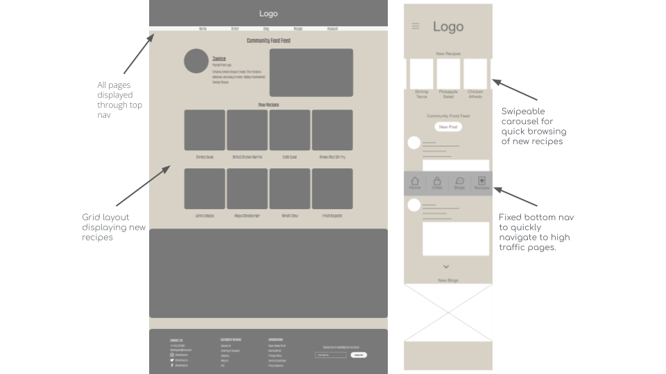

HealthyEats Case Study
Eating Healthy For Home Cooks

Project Overview
HealthyEats is a mobile application made to make home chefs' lives easier and help them eat healthier. This app allows users to search a wide range of healthy alternative recipes made by real chefs! This app also helps the user organize and keep track of everything in their pantry.
My role:
User Research
After conducting 2 interviews and 2 empathy maps, to better understand the user and their needs. A primary user group identified were people ages 20-35, wanted a simple and easy way to find healthy alternatives. Participants that have used other sites/apps to browse recipes, but were conflicted with mixed reviews.
User Pain Points
Users were frustrated at how difficult the recipes were to follow.
Not being able to remember what ingredients they already had at home and end up buying extra at the store.
Users say that browsing recipes just by search overwhelms them with the amount of results. Leaving them not knowing which one to pick.
Personas
Maps
Paper Wireframes
These are a couple of HealthyEats wireframes drawn out by hand. The one to the left is for web and the other for mobile.
Digital Wireframes
I drew multiple different home pages for both web and mobile. I tried taking different ideas and mashed it together. This was the result that I liked the best.
Low-Fidelity Prototype
Below, is my low-fidelity prototype for the mobile site of HealthyEats.
Usability Studies Findings
The user will be apart of a moderated usability study. They will be prompted to complete 3 tasks that can be done through the app, share any ideas, and provide any feedback.
Round 1 Findings
Users wanted a simple and fun feel to the app.
Round 2 Findings
The flow from other pages, to the recipe/pantry page was off.
Users wanted to be able to toggle views for website use.
Mockups
Based on usability studies, I made changes to the homepage. Users wanted a simple and fun feel to the app. I added a 60/30/10 color palette and rounded a few components on the pages as well.
The second usability study revealed frustration when going to “Recipes/Pantry” page. Users found it strange to navigate to the pantry page first, after clicking the “Recipes” button. This was fixed by making the recipes page the primary page to prototype to.
Screen Variations
Based on usability studies, I made changes to the homepage. Users wanted a simple and fun feel to the app. I added a 60/30/10 color palette and rounded a few components on the pages as well.
High-Fidelity Prototype
The final high-fidelity prototype presented the sasme user flow. It includes all of the changes made after the usability study.
Accessibility Considerations
Used detailed imaages to represent the meal. To help users better understand what they are clicking on.
Tested color contrast on WebAIM and compared WCAG, making sure my color pallette is user friendly.
Used icons to help make navigation easier.